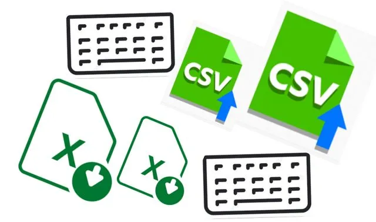

Card title
Ensure your website's URLs are functioning properly with our comprehensive status checker.

Card title
Easily input URLs manually or in bulk, or upload files in CSV or XLSX formats for streamlined processing.

Card title
Seamlessly optimize your website for search engines with accurate and reliable data.

December 11, 2016
Vol. 13 No. 1 (2016)

December 2, 2014
Vol. 11 No. 1 (2014): Rhetoric, Policy and Critical Environmental Engagement

June 19, 2020
Vol. 17 No. 1 (2020): Modernist Considerations

December 15, 2020
Vol. 17 No. 2 (2020): Health

December 18, 2015
Vol. 12 No. 1 (2015): Applied Effects